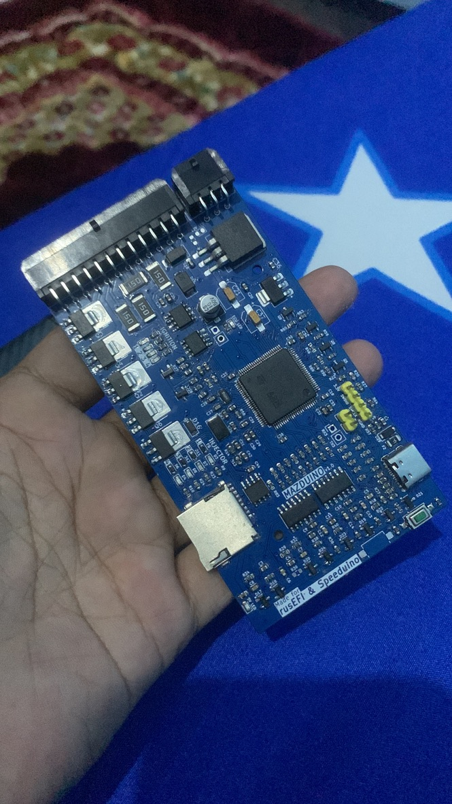

Mazduino Compact ECU
Overview
The Mazduino Compact ECU is a 4-channel standalone engine control unit designed for versatile engine management applications. Made specifically for rusEFI and Speeduino firmware, it provides comprehensive engine control in a compact package suitable for 4-cylinder full sequential or 8-cylinder paired operation.

Key Features
- Primary trigger input for CKP hall or optical sensor only
- Secondary trigger input for CMP hall or optical sensor only
- 6 analog inputs (0-5V) for MAP, TPS, IAT, CLT, O2, and 1 spare that can be used for fuel pressure or other sensors
- 5V power supply for sensors with internal fuse protection
- 3 digital pullup inputs for AC Switch, VSS, Clutch (AC or VSS can be used for Launch Control button if not needed)
- 5x high current low-side drivers 3A for high-impedance injectors and idle PWM (ISC)
- 5x low current low-side drivers for main relay, fuel pump, AC compressor, fan, and tachometer control
- 4x 12V or 5V outputs for ignition coil signals
- 168 MHz ARM Cortex-M4 processor
- Data communication via CANbus
- Data communication via USB Type-C
- Serial RX/TX communication
- 30-pin connector with 6-pin and 24-pin configuration
- SD card for data logging
Wiring and Installation
Connector Pin Mapping
The Mazduino Compact ECU uses a 30-pin connector with the following pin assignments:

Connector Layout
1 2 3 7 8 9 10 11 12 13 14 15 16 17 18
4 5 6 19 20 21 22 23 24 25 26 27 28 29 30
Pin Assignments
| Pin | Function | Description |
|---|---|---|
| 1 | Clutch | Clutch position input |
| 2 | AC Switch | AC switch/digital input |
| 3 | CANH/Spare Analog 1 | CAN High or spare analog input (solder jumper) |
| 4 | VSS | Vehicle speed sensor |
| 5 | GND | Ground |
| 6 | CANL/Main Relay | CAN Low or main relay (solder jumper) |
| 7 | 12V | Main power supply |
| 8 | 5V | 5V reference output |
| 9 | Fan | Fan relay control |
| 10 | Tacho | Tachometer output |
| 11 | Idle PWM | Idle air control PWM |
| 12 | Injector 4 | Injector channel 4 |
| 13 | Injector 3 | Injector channel 3 |
| 14 | Injector 2 | Injector channel 2 |
| 15 | Injector 1 | Injector channel 1 |
| 16 | CMP | Camshaft position sensor |
| 17 | TPS | Throttle position sensor |
| 18 | MAP | Manifold absolute pressure |
| 19 | GND | Ground |
| 20 | GND | Ground |
| 21 | AC Compressor | AC compressor relay |
| 22 | Fuel Pump | Fuel pump relay |
| 23 | Ignition 1 | Ignition channel 1 |
| 24 | Ignition 2 | Ignition channel 2 |
| 25 | Ignition 3 | Ignition channel 3 |
| 26 | Ignition 4 | Ignition channel 4 |
| 27 | CKP | Crankshaft position sensor |
| 28 | IAT | Intake air temperature |
| 29 | CLT | Coolant temperature |
| 30 | O2 | Oxygen sensor |
MCU Pin Mapping
For advanced users and firmware development, here are the STM32F407VGT6 pin assignments:
| Function | MCU Pin |
|---|---|
| Ignition Output 1 | PE15 |
| Ignition Output 2 | PE14 |
| Ignition Output 3 | PD13 |
| Ignition Output 4 | PE5 |
| Injection Output 1 | PD8 |
| Injection Output 2 | PB15 |
| Injection Output 3 | PB14 |
| Injection Output 4 | PB13 |
| MAP Sensor | PA0 |
| TPS | PA3 |
| IAT Sensor | PA5 |
| CLT Sensor | PA4 |
| O2 Sensor | PA1 |
| Battery/Voltage Ref | PA2 |
| Analog Spare Input 1 | PB1 |
| AC Input | PB0 |
| Clutch Input | PE13 |
| VSS | PD7 |
| CKP | PD3 |
| CMP | PD4 |
| Tacho | PC9 |
| Fuel Pump Relay | PC8 |
| FAN Relay | PA15 |
| AC Compressor Relay | PC7 |
| Main Relay | PE8 |
| Idle 1 | PD9 |
| TXD1 | PA9 |
| RXD1 | PA10 |
| TXD3 | PB10 |
| RXD3 | PB11 |
| TXCAN | PD1 |
| RXCAN | PD0 |
| SD CS | PD2 |
| SPI3 CLK | PC10 |
| SPI3 MISO | PC11 |
| SPI3 MOSI | PC12 |
Solder Jumpers
The PCB includes solder jumpers on the back for configuration: - Pin 3: CANH or Spare Analog Input 1 - Pin 6: CANL or Main Relay Control - Ignition voltage selection: Choose appropriate voltage for ignition coils
Installation Steps
- Mounting: Secure ECU in suitable location
- Power Connection: Connect main power (pin 7) and ground (pins 5, 19, 20)
- Sensor Wiring: Connect engine sensors per pin mapping above
- Actuator Wiring: Wire injectors and ignition coils to respective pins
- Verification: Check all connections before power-up
Wiring Notes
- Sensor Ground: Use pins 19 and 20 for sensor ground connections
- 5V Reference: Pin 8 provides 5V reference for sensors
- CAN Configuration: Use solder jumpers to select CAN or relay functions (pins 3 & 6)
- Wiring Compatibility: Wiring is compatible with Speeduino standards
- Reference: Additional wiring information available at Speeduino Wiki
Support and Resources
Documentation
- Installation guide - Complete setup instructions
- Wiring diagrams - Detailed connector pin assignments (see above)
- Tuning guide - Engine configuration and optimization
- Troubleshooting - Common issues and solutions
Firmware & Configuration Files
- Download Page - Get the latest firmware and TunerStudio configuration files
- rusEFI and Speeduino firmware available